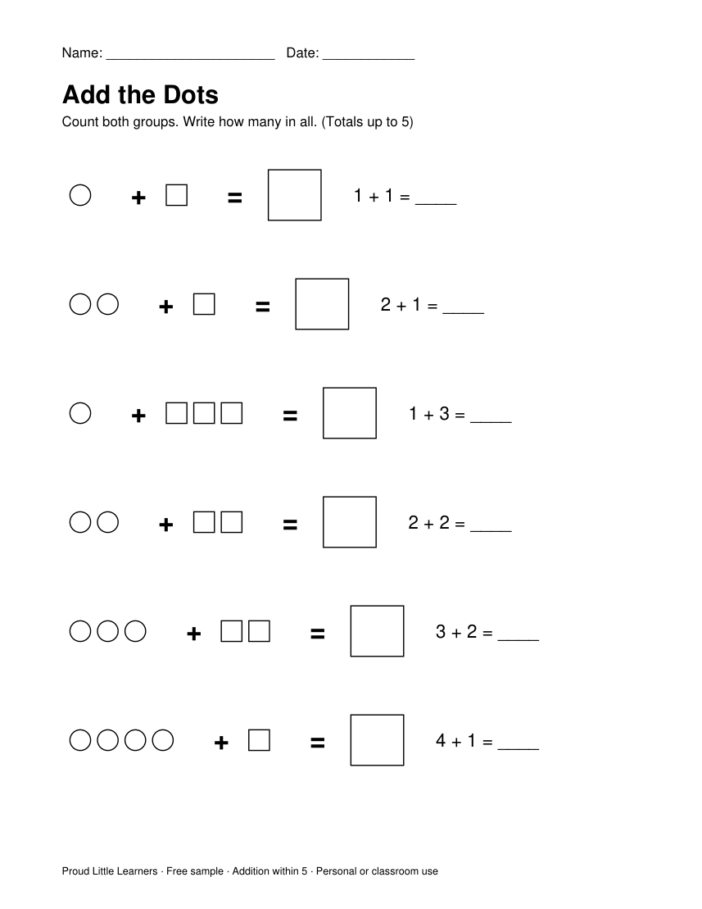
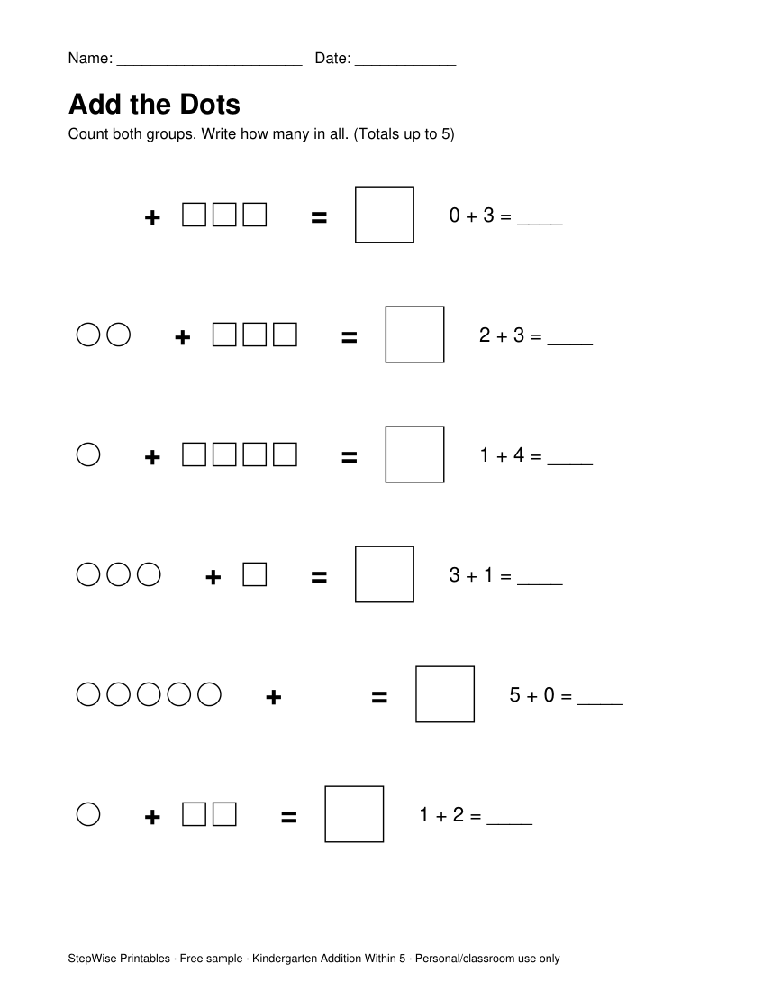
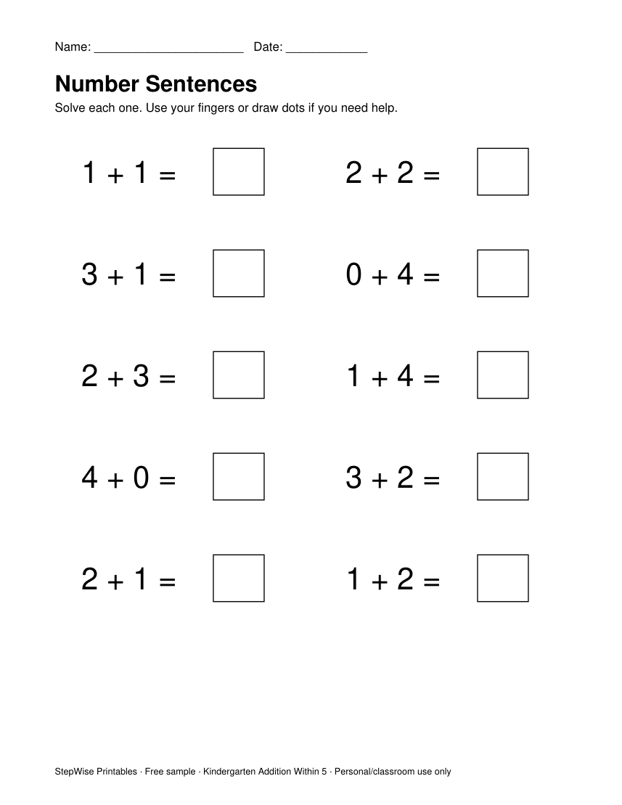
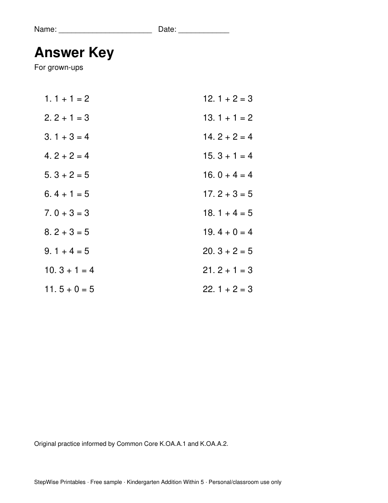

Free download · Kindergarten addition
Try one page before you choose a pack
Count the dots, add two small groups, and write the total. Every problem stays within 5. There is no surprise jump.
- A real practice page, plus an answer key
- Prints in black and white
- Short enough for one sitting
The file downloads now. No email needed.




Is this a suitable starting point?
A good fit if your child can count to 10, recognize numbers 0–5, and count objects one by one.
If the page is too hard, use counters and count together. If it feels easy, look at the Intermediate pack (within 10).
These pages practice goals from Common Core K.OA.A.1 and K.OA.A.5.
Want a new packet every week?
StepWise Printables Weekly is $3.99 a month. A new math or reading packet every week, for the grade you pick. Or start with one kindergarten level.
See the weekly plan